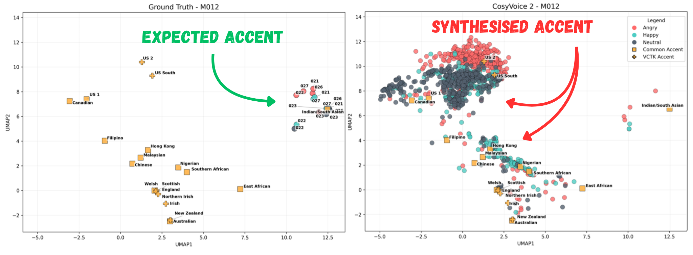
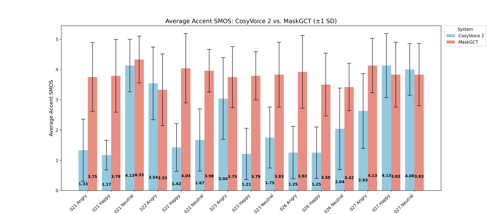

Accent-Emotion Entanglement in LM-Based TTS Synthesis

Abstract
Many zero-shot TTS systems now claim to produce near-human quality imitations of speech. However, the recent growth in features and the rush to report state-of-the-art results can lead to unexpected issues slipping through the cracks. This paper investigates such an issue, a new phenomenon dubbed accent-emotion entanglement. It is found that, in CosyVoice 2 (Du et al, 2024), an instruction-based zero-shot TTS system, accent hallucination is caused and guided by the emotion of the input provided to the model. A similar zero-shot model, MaskGCT (Wang et al, 2024), does not produce the same results. The paper also discusses the importance of subjective results in evaluation as a means to avoiding future unexpected issues.
Subjective Results

To both quantify accent-emotion entanglement and validate its existence, a listening test was conducted. 29 participants were asked to rate the similarity between a synthesised utterance and the ground truth (taken from the MEAD dataset (Wang et al, 2020)) exclusively considering accent.
The reference speech provided to each TTS system matched the ground truth in speaker and emotion. CosyVoice 2 accepts fine-tuned instructions where MaskGCT does not. For the happy/angry condition, the instruction given was 'Make this sound angry/happy'. For neutral utterances no instruction was given.
The rating system used a 1-5 scale, with lower scores representing lesser similarity. The results of this test are shown in the table below and are visualised above
| System | Emotion | Accent SMOS Scores by Target Text | ||||
|---|---|---|---|---|---|---|
| 021 | 022 | 023 | 026 | 027 | ||
| CosyVoice 2 | Angry | 1.33 ± 1.03 | 3.54 ± 1.2 | 3.04 ± 1.35 | 1.25 ± 0.86 | 2.63 ± 1.24 |
| Happy | 1.17 ± 0.49 | 1.42 ± 0.79 | 1.21 ± 0.85 | 1.25 ± 0.85 | 4.13 ± 1.06 | |
| Neutral | 4.13 ± 0.87 | 1.67 ± 1.03 | 1.75 ± 1.01 | 2.04 ± 1.35 | 4.00 ± 0.85 | |
| MaskGCT | Angry | 3.75 ± 1.14 | 3.33 ± 1.18 | 3.75 ± 1.01 | 3.92 ± 1.2 | 4.13 ± 0.9 |
| Happy | 3.79 ± 1.2 | 4.04 ± 1.15 | 3.79 ± 0.8 | 3.5 ± 1.04 | 3.83 ± 1.07 | |
| Neutral | 4.33 ± 0.78 | 3.96 ± 0.71 | 3.83 ± 1.07 | 3.42 ± 0.78 | 3.83 ± 1.03 | |
These results confirmed that CosyVoice 2 often fails to accurately represent the accent of the reference speaker. Happy utterances seemed particularly prone to accent hallucination, with an average SMOS of just 1.84. All 3 emotions though saw low scoring utterances suggesting that accent hallucination was not only caused by certain emotions.
Instead, listening to the utterances revealed that nature of the accent hallucination did seem to be guided by the emotion of the input. A selection of the utterances used in the listening test can be heard at the bottom of the page while a preview of the listening test can be seen here.
Objective Results
UMAP plots for speaker M007 (male) in the MEAD database, (Wang et al, 2020)), showing how accents cluster for utterances with different emotions. Points represent utterance accent embeddings derived from GenAID (Zhong et al, 2025), reduced to 2 dimensions. Ground truth accent points are included from the CommonAccent, (Zuluaga-Gomez et al, 2023), and VCTK, (Yamagishi et al, 2020), databases.
UMAP plots for speaker M012 (male) in the MEAD database, (Wang et al, 2020)), showing how accents cluster for utterances with different emotions. Points represent utterance accent embeddings derived from GenAID (Zhong et al, 2025), reduced to 2 dimensions. Ground truth accent points are included from the CommonAccent, (Zuluaga-Gomez et al, 2023), and VCTK, (Yamagishi et al, 2020), databases.
UMAP plots for speaker W018 (female) in the MEAD database, (Wang et al, 2020)), showing how accents cluster for utterances with different emotions. Points represent utterance accent embeddings derived from GenAID (Zhong et al, 2025), reduced to 2 dimensions. Ground truth accent points are included from the CommonAccent, (Zuluaga-Gomez et al, 2023), and VCTK, (Yamagishi et al, 2020), databases.
UMAP plots for speaker W033 (female) in the MEAD database, (Wang et al, 2020)), showing how accents cluster for utterances with different emotions. Points represent utterance accent embeddings derived from GenAID (Zhong et al, 2025), reduced to 2 dimensions. Ground truth accent points are included from the CommonAccent, (Zuluaga-Gomez et al, 2023), and VCTK, (Yamagishi et al, 2020), databases.
To further investigate the nature of the issues in CosyVoice 2 and to establish the existence of accent-emotion entanglement over random accent hallucination, sythesised utterances were analysed using a selection of objective metrics. 100 utterances were synthesised for each emotion (angry/happy/neutral), target text (5 total), speaker (2 male, 2 female) and system (CosyVoice 2 and MaskGCT).
Each utterance was then passed through an accent recognition system, GenAID (Zhong et al, 2025), to produce accent embeddings. These embeddings can be seen in the graphs above, reduced to 2 dimensions through UMAP projection. Ground truth accents were taken from the VCTK (Yamagishi et al, 2020) and CommonAccent (Zuluaga-Gomez et al, 2023) databases to provide context.
These visualisations support the listening test resutls and show how the emotion of the input provided to CosyVoice 2 impacts the accent of the output. While the majority of utterances have a General American accent, regardless of the accent of the reference speaker, clusters of outliers can be seen for each emotion. Many angry utterances, for example, are given African accents.
This does not occur for neutral input which instead sees a cluster of British-accented utterances. Where the accents of utterances produced by MaskGCT are generally close to their ground truth equivalent, CosyVoice 2 utterances follow a distinct, highly dispersed pattern regardless of reference speaker. This suggests that it is not exclusively some element of the reference speech that is leading to the accent hallucination.
| Speaker | Emotion | Cosine Distance to Centroid | ||
|---|---|---|---|---|
| Ground Truth | CosyVoice 2 | MaskGCT | ||
| M007 | Angry | 0.017 | 0.032 | 0.017 |
| Happy | 0.017 | 0.055 | 0.010 | |
| Neutral | 0.034 | 0.035 | 0.026 | |
| M012 | Angry | 0.019 | 0.038 | 0.014 |
| Happy | 0.014 | 0.058 | 0.017 | |
| Neutral | 0.016 | 0.033 | 0.013 | |
| W018 | Angry | 0.033 | 0.039 | 0.037 |
| Happy | 0.014 | 0.052 | 0.020 | |
| Neutral | 0.017 | 0.029 | 0.024 | |
| W033 | Angry | 0.020 | 0.039 | 0.023 |
| Happy | 0.028 | 0.054 | 0.029 | |
| Neutral | 0.019 | 0.042 | 0.033 | |
The greater spread of CosyVoice 2 utterance accents is quantified in the table above. For every speaker and emotion, CosyVoice 2 utterances show the greatest average cosine distance from their respective centroid. CosyVoice 2 produces a wide variety of accents for each speaker and emotion. This aligns with the visualisations and the listening test results.
A key motivator for this project was to use a variety of evaluation metrics which come together to produce a clear picture of accent-emotion entanglement. The goal was for it to be clear what each metric captures and how they are grounded in human perception. Many systems now present results for metrics such as speaker similarity, handily captured in a single number for each condition.
However, upon deeper analysis it is often not obvious what exactly these measures tell us. Can we truly capture speaker similarity in a single number? Evaluation through metrics which are either poorly described, under-utilised or overburdened does not paint the whole picture, leading to unexpected phenomena such as accent-emotion entanglement slipping through the cracks.
Impact on Emotion Realisation

UMAP plots for speaker M007 (male) showing how emotional utterances cluster for CosyVoice 2 and MaskGCT. Points represent utterance emotion embeddings derived from emotion2vec (Ma et al. 2023) , reduced to 2 dimensions. Ground truth points are included from the original speaker in the MEAD database (Wang et al, 2020).
UMAP plots for speaker M012 (male) showing how emotional utterances cluster for CosyVoice 2 and MaskGCT. Points represent utterance emotion embeddings derived from emotion2vec (Ma et al. 2023) , reduced to 2 dimensions. Ground truth points are included from the original speaker in the MEAD database (Wang et al, 2020).
UMAP plots for speaker W018 (female) showing how emotional utterances cluster for CosyVoice 2 and MaskGCT. Points represent utterance emotion embeddings derived from emotion2vec (Ma et al. 2023) , reduced to 2 dimensions. Ground truth points are included from the original speaker in the MEAD database (Wang et al, 2020).
UMAP plots for speaker W033 (female) showing how emotional utterances cluster for CosyVoice 2 and MaskGCT. Points represent utterance emotion embeddings derived from emotion2vec (Ma et al. 2023) , reduced to 2 dimensions. Ground truth points are included from the original speaker in the MEAD database (Wang et al, 2020).
In addition to studying the accent of each utterance, their emotion was also evaluated. This knowledge was key in determining the exact nature of the accent hallucination. Was accent in some way replacing the expected emotion or did they conincide? Analysis was conducted in much the same way as with accent. Each of the 100 utterances per condition were passed through emotion2vec (Ma et al. 2023) to produce an emotion embedding. These embeddings were then reduced in dimension through UMAP and plotted for each system. These visualisations can be seen above. Additionally, during the listening test, participants were asked to rate the similarity of a synthesised utterance's emotion to its ground truth equivalent, just as with accent. A summary of these results are shown in the table below.
| System | Average SMOS by Emotion | ||
|---|---|---|---|
| Angry | Happy | Neutral | |
| CosyVoice 2 | 3.52 ± 0.20 | 3.13 ± 0.80 | 3.30 ± 0.20 |
| MaskGCT | 2.58 ± 0.95 | 3.44 ± 0.41 | 2.53 ± 0.69 |
| p-value | 0.062> | 0.46> | 0.043 |
The visualisations align with listening test findings, showing that although performance is largely similar, CosyVoice 2 does slightly improve over MaskGCT in terms of percieved emotion similarity, particularly for neutral and angry utterances. This suggests that hallucinated accents aren't in some way replacing emotions during synthesis, instead the 2 features develop separately.
No significant correlation was found between accent and emotion SMOS scores for CosyVoice 2 utterances with a Pearson correlation of r = 0.073. MaskGCT does however see a weak positive correlation with a Pearson correlation of r = 0.393. This is likely due to deliberately poor utterances being chosen. Utterances were chosen for the listening test based on cosine similarity
between the accent embeddings of the synthesised utterance and the ground truth, with the lowest scoring utterances picked. Because there was little to no accent hallucination using MaskGCT low scoring sentences seem to be those which are more generally poor formed, e.g. they sounded robotic. Such utterances may also be likely to perform poorly on emotion similarity.
The key takeaway from these results is that the emotion of a CosyVoice 2 utterance is not impacted by accent hallucination. Accent-emotion hallucination only works one way.
Example Utterances
Below are a selection of the utterances, ground truth and synthesised, used in the listening test.
| Transcription | Emotion | Ground Truth | CosyVoice 2 | MaskGCT |
|---|---|---|---|---|
| Todd placed top priority on getting his bike fixed. | Angry | Instruction: "Make this sound angry." |
||
| Happy | Instruction: "Make this sound happy." |
|||
| Neutral | Instruction: None Given |
|||
| His superiors had also preached this, saying it was the way for eternal honour. | Angry | Instruction: "Make this sound angry." |
||
| Happy | Instruction: "Make this sound happy." |
|||
| Neutral | Instruction: None Given |
|||
| I'll have a scoop of that exotic purple and turquoise sherbert. | Angry | Instruction: "Make this sound angry." |
||
| Happy | Instruction: "Make this sound happy." |
|||
| Neutral | Instruction: None Given |